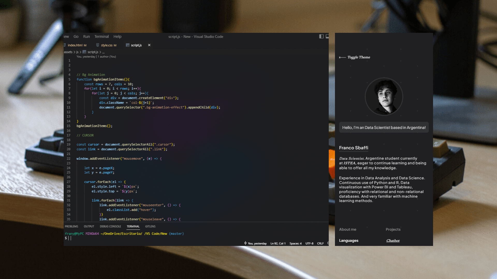
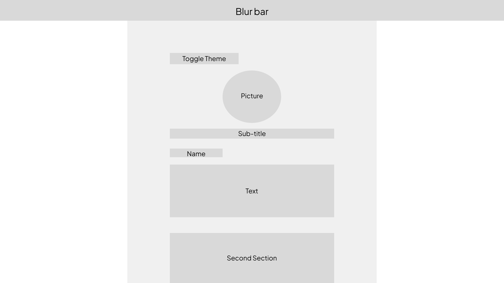
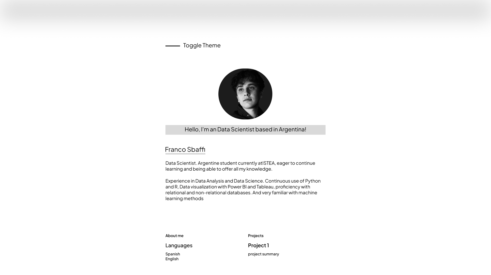
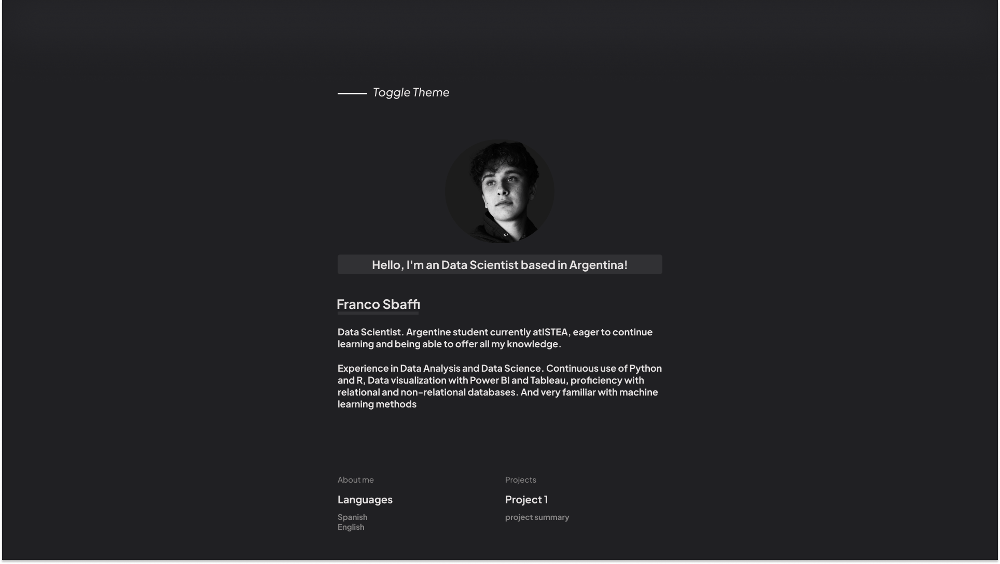
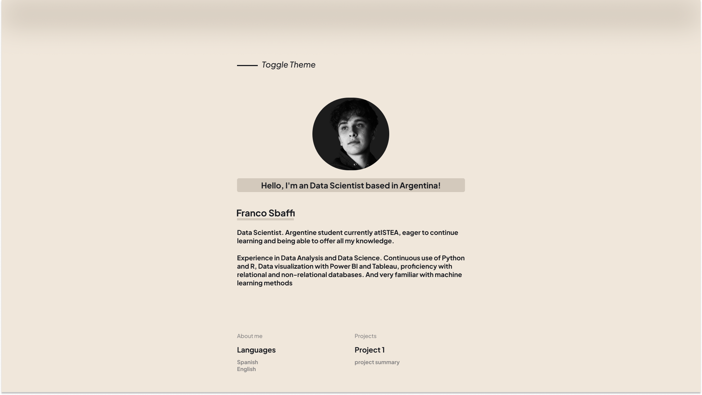

How did I build my portfolio?
Today I am going to show you the step by step of my portfolio, the prototyping and scaling that I did in Figma and once finished I went to a simple code made in HTML, CSS and a bit of JAVASCRIPT.

How did I build my portfolio?
Today I am going to show you the step by step of my portfolio, the prototyping and scaling that I did in Figma and once finished I went to a simple code made in HTML, CSS and a bit of JAVASCRIPT.
The first thing is to have clear ideas and go on to design it in the place that you like the most. In my case, FIGMA, I started with a very simple mockup where I just placed the boxes and got an idea of where all my content was going to go.

that simple mockup took me more than an hour...
As I said before, the most important thing is to know where you are going to position each box, where all your content is going to be. It is a matter of trying until you find the design that you like the most.
Once I achieve my layout, it's all about replacing the boxes with content. (in my case I don't need a responsive design but remember to do it too if your content deserves it)

I was starting to like the design, I wanted something "minimalist" and now it was time to start playing with colors.
I wanted a dark mode and in turn alternate it with a light mode, I had to choose many colors and for me, being colorblind, it was not an easy task 😊. That's why I opted for white letters and alternate backgrounds between light gray and dark gray.
While for the light tone I was in a dilemma since I did not like the white tone. It was between a very light gray but I ended up opting for shades I think "Cream".
Once the colors have been chosen, all that remains is to take them to the Mockup and give it the final touches, this ended up being my result:


As you can see, the idea was almost finished and I say almost because in the code I added some changes that give it a more special extra.
Okay, the first thing I did obviously was to open VSCode, create my index.html and an Assets folder that inside it would create another 3 more folders (CSS, JS and another one for my images) with their respective files.
Then of course I started with the simple, separating as in figma all the content by different boxes using Sections, Articles and Divs.
Once the HTML part was finished and I assigned classes, I could go to the CSS to start making it pretty.
In CSS I started by importing fonts from google fonts, Assigning variables that were going to be Colors, Fonts and later other colors for the Cursor.
More importantly, I wanted all the content to have a max width and to do so I simply added a container with a max width of 550px, which means that by assigning it to the "parent" tag, all the content that follows will be the same as aligned.
When I got to this part I already had the content of my WEB the same as the final version of the Mockup, so I thought "Why not make a cursor?" right or wrong I ended up doing it and was quite satisfied with the result.
Two lines of HTML, four lines of CSS, and a few lines of JS were enough to do it. But I also felt that everything was very static, so I decided to add a background that is constantly moving but at the same time not annoying. It was even easier than the cursor.
At this point I already had the portfolio almost done but... Thinking for a while I said "It would be nice to put a clock in the footer", so I did it. I added a clock which marks my time since if someone is interested in contacting me they can get an idea of how long I can take to respond.
Thank you for coming this far, I hope you liked it or served as inspiration for your next project.
As I always say, I'm not a Web Developer, I'm a Data Scientist, so my specialty goes elsewhere, even so I have a little knowledge that helped me to make my own portfolio and I am very satisfied with the final result.
Goodbye 👋